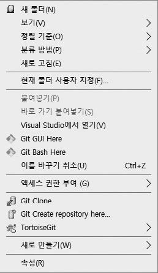

그럼 깃 저장소의 숨겨진 영역을 살펴보면서 저장소를 좀 더 알아봅시다.
저장소를 생성하려면 먼저 초기화 작업이 필요합니다.
깃에서 초기화란 이미 존재하는 폴더에 초기화 명령어로 VCS 관리를 위한 숨겨진 영역을 생성하는 작업을 의미합니다.
깃 초기화를 해 봅시다. 먼저 터미널(깃 배시)을 실행합니다.

Nodte: 터미널은 텍스트로 명령어를 입력할 수 있는 대화창입니다.
깃 배시 터미널 프로그램 외에도 윈도에 기본 내장된 CMD, powerShell 등을 사용해도 됩니다.
책에서는 깃 배시를 기준으로 합니다. 윈도 메뉴 말고 바탕화면의 깃 배시 아이콘으로 실행해도 됩니다.
실습에 필요한 새 폴더를 하나 만들겠습니다.
또는 기존에 있던 폴더에서 시작해도 괜찮습니다.
먼저 실습 폴더를 만들고 해당 폴더로 이동합니다.
책에서는 jinygit03 폴더를 만들고 해당 폴더로 이동했습니다.
$ mkdir jinygit03 ☜ 폴더를 만듭니다.
$ cd jinygit03 ☜ 만든 폴더로 이동합니다.
Note: mkdir 명령어와 cd 명령어
mkdir 명령어는 make directory의 약어로 셸(터미널)에서 폴더를 만드는 명령입니다.
cd 명령어는 change directory의 약어로 디렉터리를 이동하는 명령입니다.
명령 프롬프트를 사용하는 것이 익숙하지 않다면, 윈도 탐색기에서 마우스 오른쪽 버튼을 누른 후새로 만들기>폴더 메뉴를 선택하여 만들어도 좋습니다.
Note:지정된 폴더에서 깃 배시 열기
명령 프롬프트에서 원하는 경로로 이동하기 불편하다면, 윈도 탐색기를 사용하여 원하는 폴더로 이동한 후 해당 폴더에서 터미널을 열 수 있습니다. 원하는 폴더에서 마우스 오른쪽 버튼을 누른 후 Git Bash Here 메뉴를 선택합니다.

이제 터미널에서 다음 초기화 명령어를 입력합니다.
깃 명령어는 보통 git 키워드와 명령어를 함께 입력합니다.
옵션을 추가할 수도 있습니다.
$ git init 경로명
앞에서 설명했듯이 git init 명령어는 기존 폴더에 숨겨진 영역(숨겨진 폴더)을 추가합니다.
숨겨진 영역을 추가함으로써 깃 저장소로 변경되는 것입니다.
초기화 명령어를 입력할 때 경로명을 입력하지 않으면, 현재 폴더에서 초기화됩니다.
우리는 원하는 폴더로 이동한 상태이므로 경로명을 입력하지 않고 실행할 것입니다.
정상적으로 초기화되었다면 Initialized empty~ 같은 메시지를 출력합니다.
$ git init ☜ 저장소 초기화 명령
Initialized empty Git repository in E:/jinygit03/.git/
현재 폴더를 의미하는 .을 사용할 수도 있습니다.
$ git init .

깃 초기화는 완전히 비어 있는 폴더나 기존에 사용하던 폴더에서 모두 가능합니다.
앞에서 언급했듯이 깃 저장소는 영어로 리포지터리라고 하니, 두 용어를 혼동하지 말고 동일한 것으로 이해하면 됩니다.
초기화된 저장소에서 숨긴 항’을 볼 수 있게 허용하면, 숨겨진 영역을 확인할 수 있습니다.
Note: 윈도 탐색기에서 숨겨진 파일을 표시하려면 설정을 변경해야 합니다. 탐색기 보기 메뉴를 선택한 후 숨긴 항목을 체크합니다.

git init 명령어는 기본적으로 로컬 저장소를 생성하며, 다양한 옵션을 추가로 제공합니다.
추가 옵션을 사용하여 원격 저장소도 초기화할 수 있습니다.